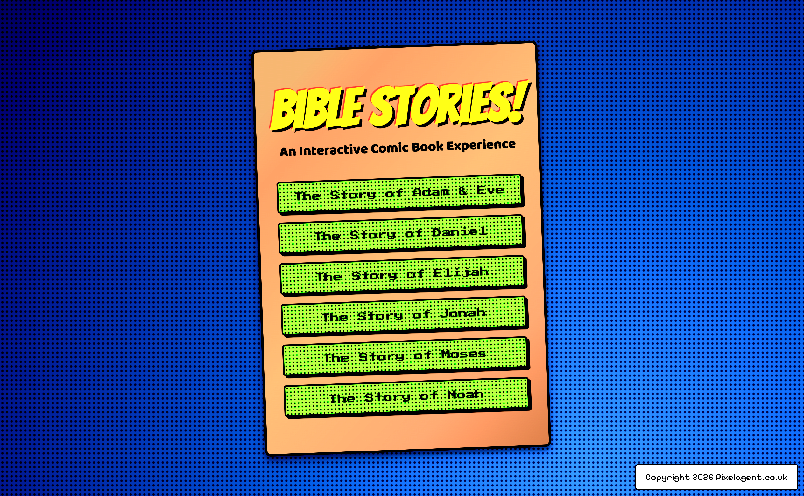

Case study / Interactive comic collection
Bible Stories
An illustrated library of timeless narratives — from the garden and the ark to the lions’ den and the fiery furnace. Each story is told as a cinematic, interactive comic with sequential art, sound and motion, built to be read on desktop and mobile.